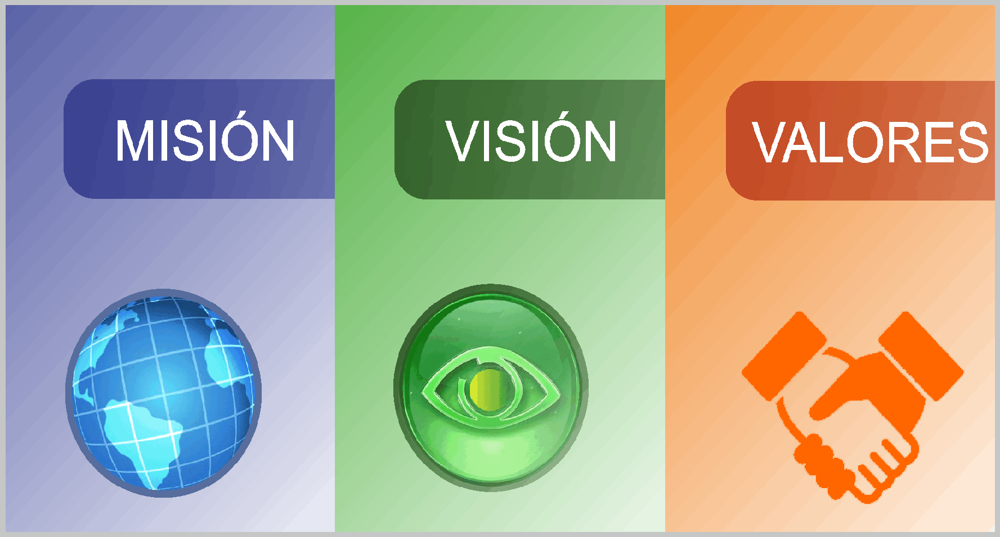

MISION:Somos una institución pública de educación media superior que forma integralmente a sus estudiantes bajo el enfoque de competencias, preparándolos para la vida, el mercado laboral y la educación superior, con los principios de calidad, equidad, inclusión, transparencia y rendición de cuentas.
VISION:El Colegio de Bachilleres del Estado de Quintana Roo es una institución líder a nivel estatal en educación media superior, reconocida por su calidad educativa, con una oferta diversificada que responde a las necesidades de la sociedad, con docentes y directivos competentes e infraestructura y servicios educativos pertinentes.

El colegio de bachilleres ha sido fundado desde hace 42 años y desde entonces ha trabajado bajo politicas y valores que nos identifican como institucion
OBJETIVO DEL PLANTEL:Impartir e impulsar la Educación al alumno del Nivel Medio Superior, y proporcionarle los conocimientos suficientes que le permitan integrarse a la sociedad y continuar sus estudios en las diversas escuelas de NiveL Superior.